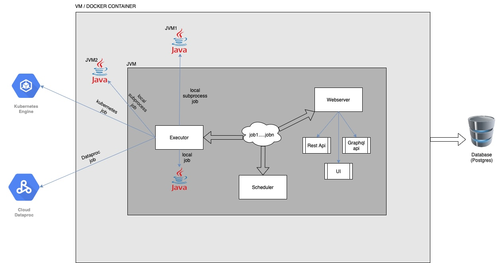

Quickstart (Etlflow Server)
Etlflow Server is one of the module of etlflow library which can be used for scheduling, triggering, monitoring the jobs. Unique feature of this is that we can run the same etl job in different modes like Local (Inside same jvm), LocalSubProcess (In another jvm), GCP DataProc, Kubernetes etc. Job mode can be set using job properties.
Etlflow Server contains sub-components like:
- Scheduler:
- Webserver is the component which provides funnctionality to run jobs based on some cron schedule, this internally uses Cron4s.
- Cron expression can be specified in job properties, see below example EtlJob1Props for more details.
- All the scheduled jobs will run Asynchronously in non blocking way which allows us to schedule 1000’s of job without any issues.
- Webserver:
- Webserver is the component which provides us with UI, GraphQL API and Rest API. It uses Http4s as backend.
- We can do job submission, check the job and step execution, monitor server health etc through the UI.
- Executor:
- Executor is responsible for actually running the job.
- It contains various different executors such as:
Architecture Diagram :

In above diagram we can see docker container is connected to database (postgres) which is getting used for storing all the etl jobs related information in database tables.
STEP 1) Define build.sbt:
To use etlflow server library in project add below setting in build.sbt file
lazy val etlflowServer = ProjectRef(uri("git://github.com/tharwaninitin/etlflow.git#minimal"), "server")
lazy val root = (project in file(".")).dependsOn(etlflowServer)
STEP 2) Define job properties EtlJobProps.scala:
Here we can have any kind of logic for creating static or dynamic input parameters for job. For e.g. intermediate path can be dynamically generated for every run based on current date.
import etlflow.EtlJobProps
import java.text.SimpleDateFormat
import java.time.LocalDate
lazy val canonical_path = new java.io.File(".").getCanonicalPath
lazy val input_file_path = s"$canonical_path/modules/core/src/test/resources/input/movies/ratings_parquet/ratings.parquet"
val date_prefix = LocalDate.now.toString.replace("-","")
// date_prefix: String = "20210320"
case class EtlJob1Props (
ratings_input_path: String = input_file_path,
ratings_intermediate_bucket: String = sys.env("GCS_BUCKET"),
ratings_intermediate_file_key: String = s"temp/$date_prefix/ratings.parquet",
ratings_output_dataset: String = "test",
ratings_output_table_name: String = "ratings",
) extends EtlJobProps
STEP 3) Define job EtlJob1.scala:
Below is the example of GenericEtlJob which has two steps which can execute in any order defined by composing ZIO effects.
import com.google.cloud.bigquery.JobInfo
import etlflow.etljobs.GenericEtlJob
import etlflow.etlsteps.{BQLoadStep, GCSPutStep}
import zio.Task
import etlflow.utils.Config
import etlflow.spark.IOType
import etlflow.gcp.BQInputType
case class RatingOutput(user_id: Int, movie_id: Int, rating : Double, timestamp: Long, date: java.sql.Date)
case class EtlJob1(job_properties: EtlJob1Props) extends GenericEtlJob[EtlJob1Props] {
val step1 = GCSPutStep(
name = "LoadRatingGCS",
bucket = job_properties.ratings_intermediate_bucket,
key = job_properties.ratings_intermediate_file_key,
file = job_properties.ratings_input_path
)
val step2 = BQLoadStep(
name = "LoadRatingBQ",
input_location = Left(s"gs://${job_properties.ratings_intermediate_bucket}/${job_properties.ratings_intermediate_file_key}"),
input_type = BQInputType.PARQUET,
output_dataset = job_properties.ratings_output_dataset,
output_table = job_properties.ratings_output_table_name,
output_create_disposition = JobInfo.CreateDisposition.CREATE_IF_NEEDED
)
val job = for {
_ <- step1.execute()
_ <- step2.execute()
} yield ()
}
STEP 4) Define job and properties mapping using EtlJobPropsMapping MyEtlJobPropsMapping.scala:
Below is the example of defining EtlJobPropsMapping where we can define the mapping between job and its properties.
import etlflow.{EtlJobPropsMapping, EtlJobProps}
import etlflow.etljobs.EtlJob
sealed trait MyEtlJobPropsMapping[EJP <: EtlJobProps, EJ <: EtlJob[EJP]] extends EtlJobPropsMapping[EJP,EJ]
object MyEtlJobPropsMapping {
case object Job1 extends MyEtlJobPropsMapping[EtlJob1Props,EtlJob1] {
override def getActualProperties(job_properties: Map[String, String]): EtlJob1Props = EtlJob1Props()
}
}
STEP 5) Define Main Runnable Server App RunServer.scala:
import etlflow.{ServerApp, EtlJobProps}
object RunServer extends ServerApp[MyEtlJobPropsMapping[EtlJobProps,EtlJob[EtlJobProps]]]
STEP 6) Running Server:
To be able to use this server library, first you need postgres instance up and running, then create new database in pg (for e.g. etlflow), then set below environment variables.
export LOG_DB_URL=jdbc:postgresql://localhost:5432/etlflow
export LOG_DB_USER=<...>
export LOG_DB_PWD=<..>
export LOG_DB_DRIVER=org.postgresql.Driver
Now to create database tables used in this library run below commands from repo root folder:
sbt
runMain RunServer run_db_migration
Now to run sample job use below command:
sbt
runMain RunServer